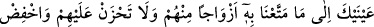

KIYÂMET
MUTLAKA GELECEK
85. Biz gökleri, yeri ve ikisinin arasındakileri ancak hak ile yarattık. O saat
(kıyâmet), mutlaka gelecektir. Şimdilik onlara güzel muâmele et.
86. Şüphesiz Rabbin hakkıyla yaratan pek iyi bilendir.
87. Andolsun ki, biz sana tekrarlanan yedi âyeti ve yüce Kur’an’ı verdik.
88. Sakın onlardan bazı sınıflara verdiğimiz dünyâ malına göz dikme, onlardan
dolayı üzülme ve mü’minlere alçak gönüllü ol.
89. De ki: Şüphesiz ben apaçık bir uyarıcıyım.
90. Nitekim biz, (Kur’an’ı) kısımlara ayıranlara azâbı indirmişizdir.
91. Onlar, Kur’an’ı bölüp ayıranlardır.
“Biz, gökleri, yeri ve ikisinin” yâni gökler ve yerler “arasındakileri ancak hak ile”
yâni bâtıl ve abes olarak değil, hak ve hikmet ile ya da hak için “yarattık.” Yâni,
kullarım onlara bakıp ibret alsın diye yarattık.” Burada bâzılarına göre göklerin aslının
bir olduğuna, sonradan taksîm edildiğine işâret vardır. Nitekim el-Kevâşî’de böyle
geçmektedir.
İki göz, Yaratan’ın eserlerini görmek için iyidir
Birâder ve dostun ayıbından gözlerini aşağı tut
Âdemin gözü ma‘rifet içindir
Ki gök ve yer üzerine açılmıştır
“O saat,” yâni kıyâmet “mutlaka gelecektir” Hiç şüphesiz meydana gelecektir.
Nitekim şöyle denilmiştir: “Gerçi kıyâmet geç gelir, fakat mutlaka gelir.”
el-Medârik’te belirtildiği üzere kopması her sâat beklendiği için kıyâmete ‘sâat’
denilmiştir. İbn Melek şöyle der: “Sâat, kıyâmetin kopacağı vaktin adıdır. Çünkü o,